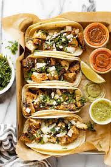

Chicken Tacos Recipe

One of my favorite dishes
I love this dish because it's very easy to make and requires minimal ingredients to make as well
Here i will show you my personal recipe and how i prefer to make them
Ingredients
- 1lb chicken thighs
- Corn street tacos
- Lime juice
- Onion
- Cilantro
- 1 teaspoon of taco seasoning
- 1 tablespoon olive oil
- In a large zipper-topped plastic baggie or in shallow dish, add the chicken, all of the spices, lime juice, and oil. Close the bag and use your hands to mix everything together. If you are using a shallow dish, use tongs to work the spices evenly into the chicken. You can let this rest for up to a half-hour or work with it right away. I like to let it rest a minute to increase the flavor.
- Heat a large skillet over medium to medium-high heat. When the skillet is hot, add a tablespoon of oil to the pan and then add the chicken. Cook for 12 to 14 minutes, turning once, until the chicken is cooked through. Remove the chicken from the pan and let it rest for 10 minutes. If you have an extra-large chicken thigh, you'll need to cook them longer, so turn down the heat to medium and cook them until no longer pink
- While the chicken cooks, stir together the chicken taco topping by placing the chopped onion, cilantro, jalapeño, and the juice of one lime in a small bowl. Add salt and pepper, and stir to combine.
- While the chicken rests, wipe your skillet clean with a warm rag or paper towels, and place the skillet back on the heat over medium-high to high heat. Place two tortillas (still stacked together) on the skillet and cook until the underside starts to char. Flip over and cook the other side
- Chop the rested chicken into bite-sized pieces.
- Serve taco and enjoy!